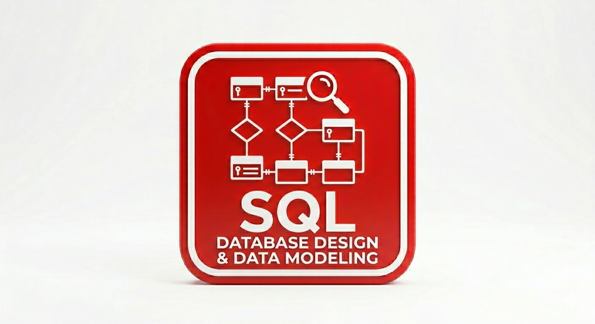

Welcome
To my data analytics portfolio — a space where I explore data, uncover patterns, and transform information into meaningful insights.
Here you’ll find projects that reflect my analytical approach, technical skills, and passion for turning data into real value.